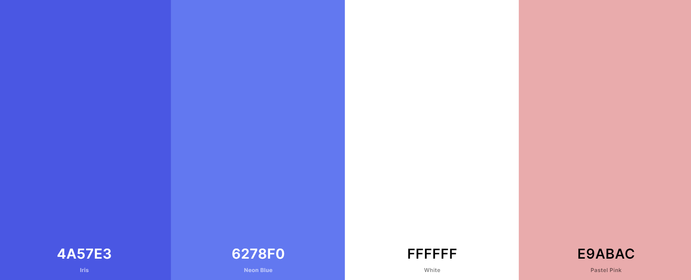
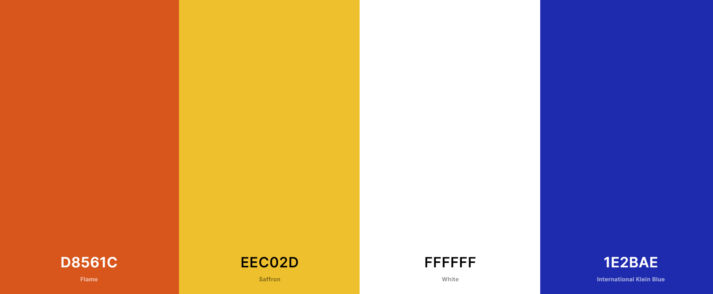
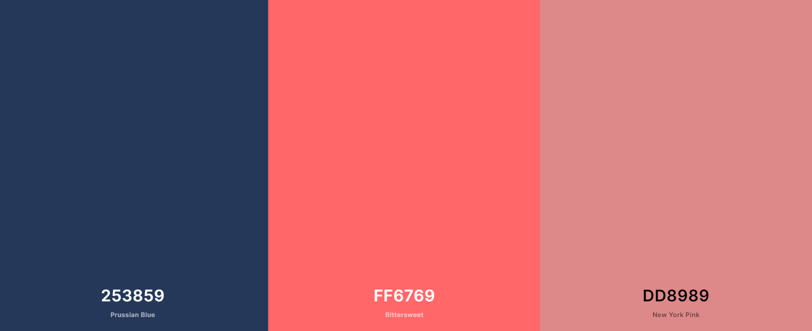
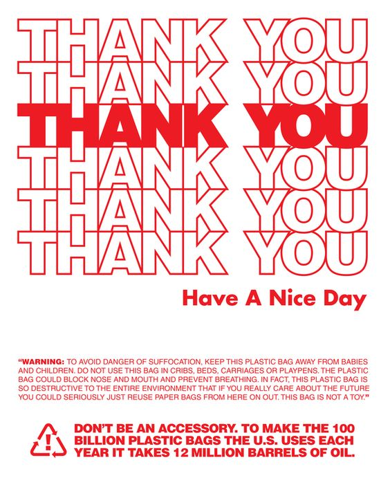
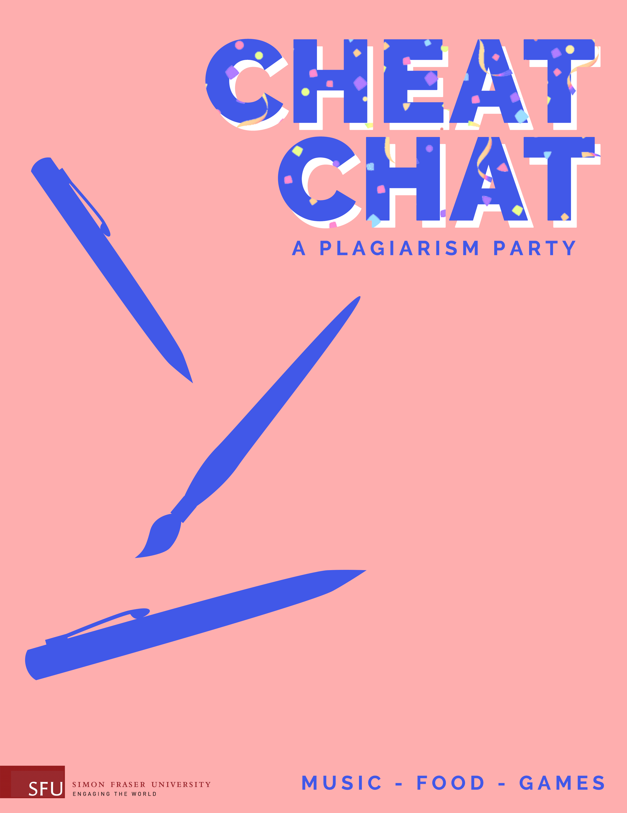
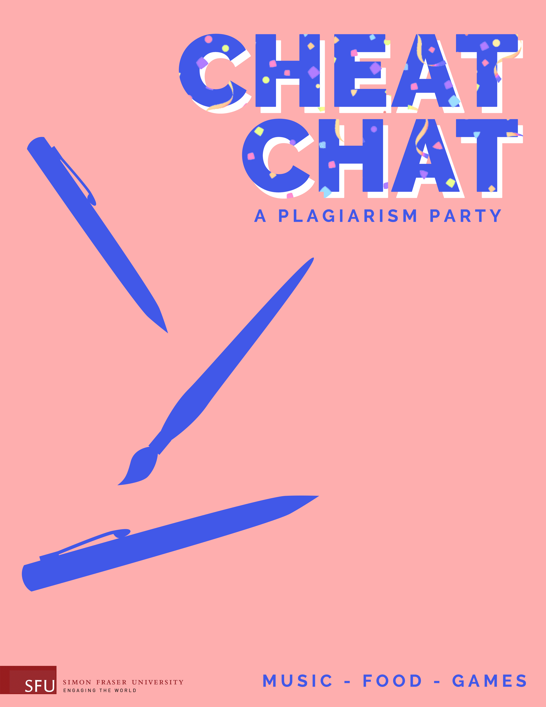

Process




Step 1 - Research and Color Pallete
Analyzing first year student’s state, what is their need? What is the content on the poster? This step help a team to decide th elements of a poster, and make sure the working direction
Step 2 - Draft 1
This is a hand draw draft, the purpose of it is to decid the color pallete and the layout. However


Step 3 - Illustate visual element
Instead of the cartoon character, we would like to use student's daily items to represent each individual, for instance, cofffe cups, puzzel and smart phone.
Step 4 - Digital Draft
In this stage, we started to creat a digital draft with the previous elements, and choose the san-serif font as the title font, because the style could match the theme. But the background is a little bit empty which could add more decoration elements.
 
